第 1 页 · 从一个实际问题谈起——身高预测
从一个实际问题谈起——身高预测
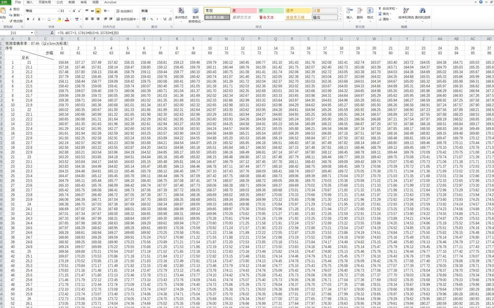
根据样本的足长和步幅数据，拟合它们与身高的关系？可用于公安刑侦
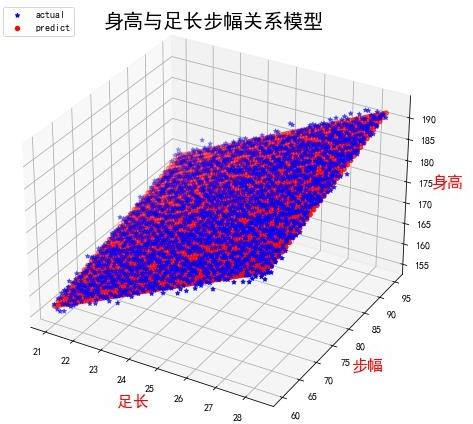
第 2 页 · 问题
问题
回归分析与分类方法有什么区别？
回归方程的自变量怎么确定？
回归分析前需要对自变量做哪些预处理？
在回归分析时，自变量的相关性对分析结果有何影响？
如何减少回归方程的过拟合问题？
噪声数据对回归问题有什么影响？
非线性回归如何转化为线性回归问题？
第 3 页 · 统计分析
统计分析
回归分析是统计学的重要方法。
统计学是研究如何搜集资料、整理资料和进行量化分析、推断的一门科学
，在科学计算、工业和金融等领域有着重要应用，统计分析是机器学习的基本方法。
与统计分析相关的基本概念有以下几个
总体：根据定目的确定的所要 研究事物的全体
样本：从总体中随机抽取的若干个体构成的集合
推断：以样本所包含的信息为基础对总体的某些特征作出判断、预测和估计
推断可靠性：对推断结果从概率上的确认，作为决策的重要依据
第 4 页 · 回归分析
回归分析
$0
$10
分析一个变量与其他一个（或几个）变量之间的相关关系的统计方法就称为回归分析。常见的回归分析包括线性回归、多元回归、非线性回归、广义线性回归（对数回归、泊松回归）等。回归分析主要内容包括确定连续值变量之间的相关关系，建立回归模型，检验变量之间的相关程度，应用回归模型对变量进行预测等。
利润
$20
年龄
20
60
40
minimize
客户利润和年龄的关系
第 5 页 · 损失函数
损失函数
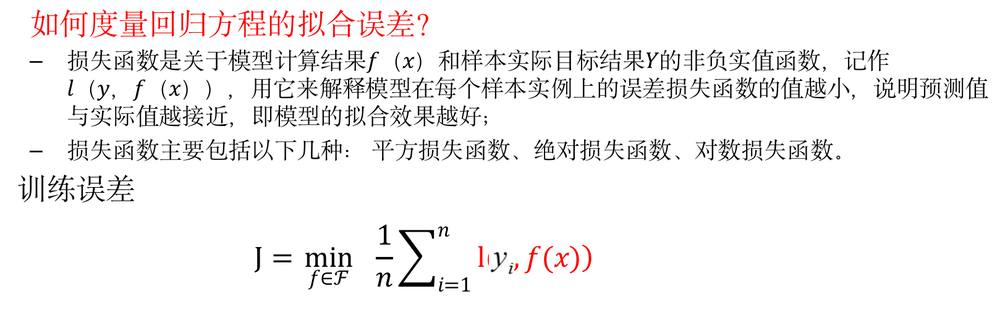
第 6 页 · 参数估计
参数估计
参数估计是用样本统计量去估计总体的参数，即根据样本数据选择统计量去推断总体的分布或数字特征。
参数估计是统计推断的种基本形式，其中除了最基本的最小二乘法和极大似然法、贝叶斯估计、极大后验估计，还有极小化极大熵法等。
第 7 页 · 线性回归
线性回归
线性回归是种通过拟合自变量与因变量之间最佳线性关系，来预测目标变量的方法。
回归过程是给出一个样本集， 用函数拟合这个样本集，使样本集与拟合函数间的误差最小。
回归分析包括以下内容：
从众多的输入变量中，判断哪些变量对目标变量的影响是显著的
确定输入变量与目标变量间的回归模型
根据样本估计并检验回归模型及未知参数
模型检验与预测精度评估
如何做？
线性回归和多元线性回归
第 8 页 · 一元线性回归
一元线性回归
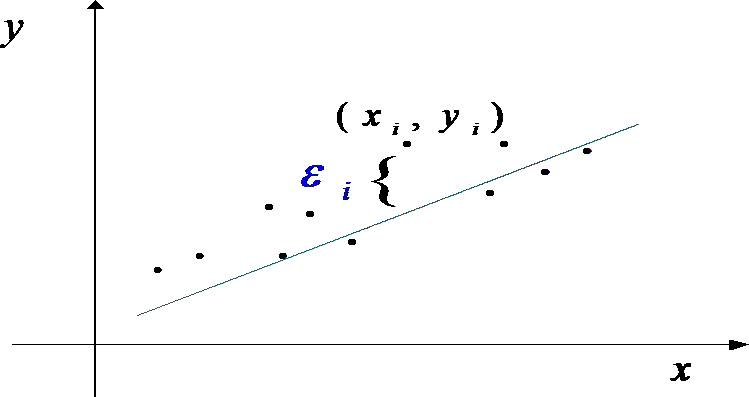
一元线性回归是描述两个变量之间线性相关关系的最简单的回归模型，如下图。在散点图中两个变量呈线性关系。一元线性回归模型表示为yabx，其中a和b是系数， 是随机变量。在这个线性模型中，自变量x是非随机变量。随机变量要求服从正态分布。
发现一条拟合样本数据的直线，使得样本点尽量靠近直线。
第 9 页 · 一元线性回归
一元线性回归
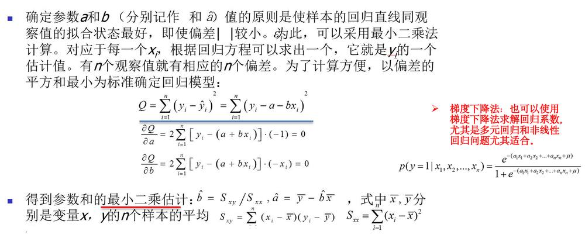
第 10 页 · 线性回归举例
线性回归举例
已知一个贸易公司某几个月的广告费用和销售额，如下表所示
可见随着广告费用的增加，公司的销售额也在增加，但是它们并非绝对的线性关系，而是趋向于平均，如下图所示
上述线性回归模型的公司为：y=1.38*x+30.6，其中x表示广告费用，y表示销售额，通过线性回归的公式就可以预测企业的销售额了
| 广告费（万元） | 10 | 13 | 22 | 37 | 45 | 48 | 59 | 65 | 66 | 68 | 68 | 71 | 84 | 88 | 89 | 89 |
| 销售额（万元） | 19 | 60 | 71 | 74 | 69 | 89 | 146 | 130 | 153 | 144 | 128 | 123 | 127 | 125 | 154 | 150 |
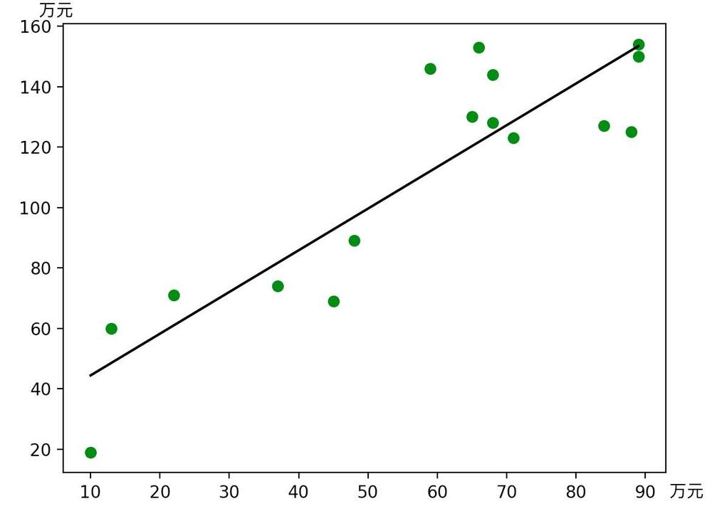
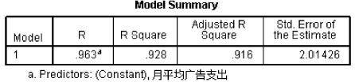
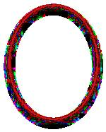
第 11 页 · 幻灯片
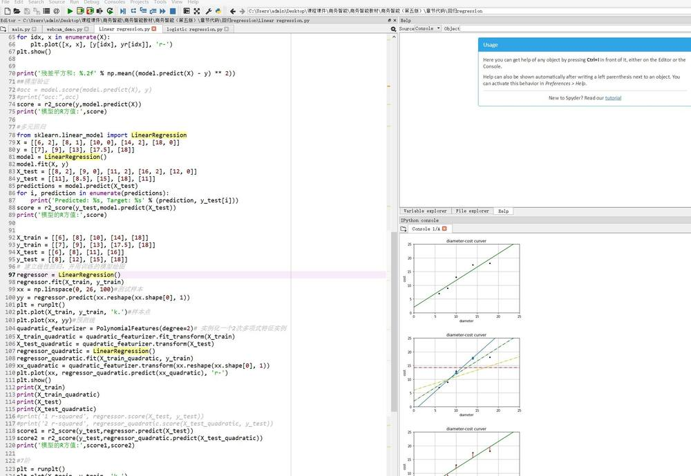
第 12 页 · 线性回归检验
线性回归检验
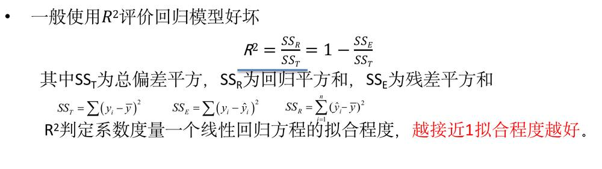
第 13 页 · 梯度下降法求回归系数
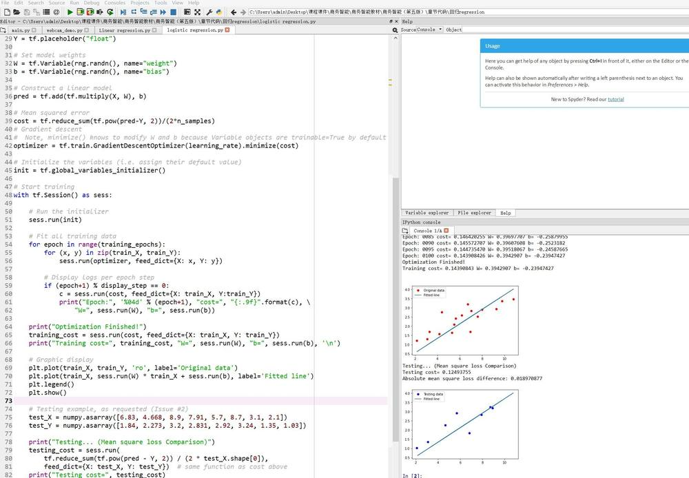
梯度下降法求回归系数
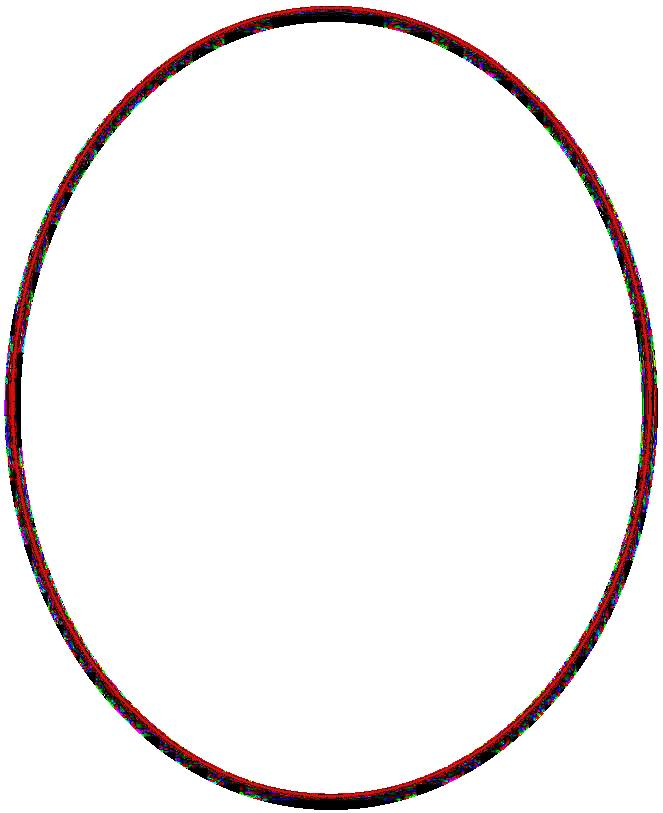
第 14 页 · 通过图片识别PM2.5
通过图片识别PM2.5
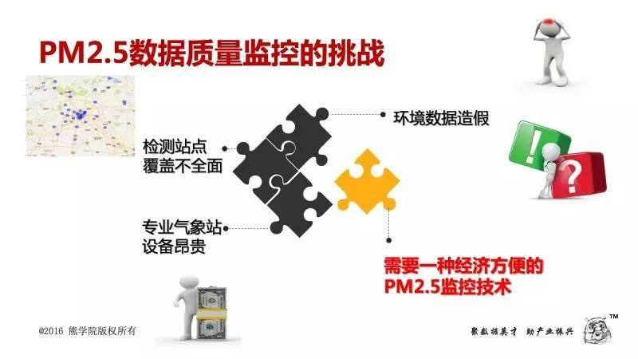
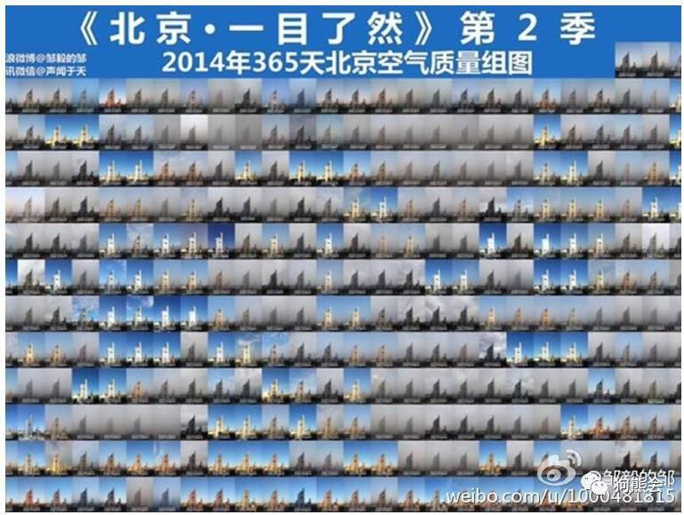
预测城市PM2.5（1）
应用创新
第 15 页 · 从衡量图像清晰程度的角度出发，对图像特征进行观察和分析，得到4个解释性变量：灰度差分的方差、清晰度、饱和度、高频含量等
从衡量图像清晰程度的角度出发，对图像特征进行观察和分析，得到4个解释性变量：灰度差分的方差、清晰度、饱和度、高频含量等
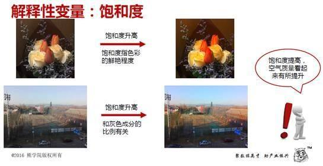
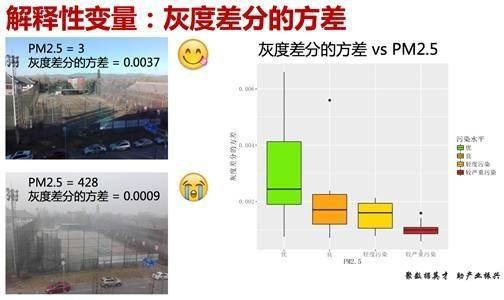
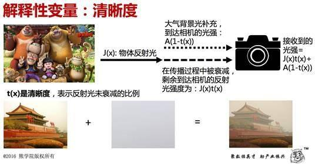
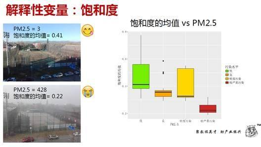
预测城市PM2.5（2）
第 16 页 · 多元线性回归的拟合优度为0.82
多元线性回归的拟合优度为0.82
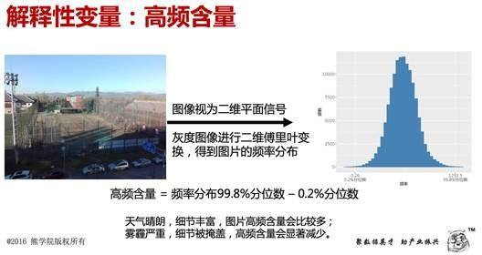
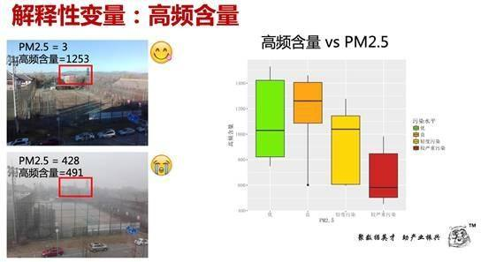
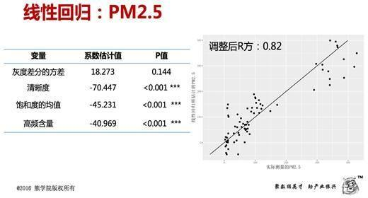
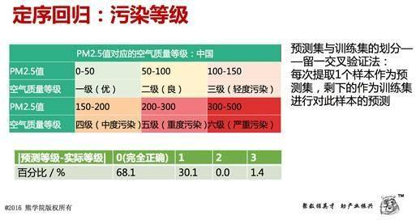
预测城市PM2.5（4）
第 17 页 · 多元线性回归（1）
多元线性回归（1）
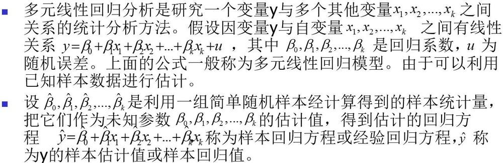
第 18 页 · 多元线性回归（2）
多元线性回归（2）
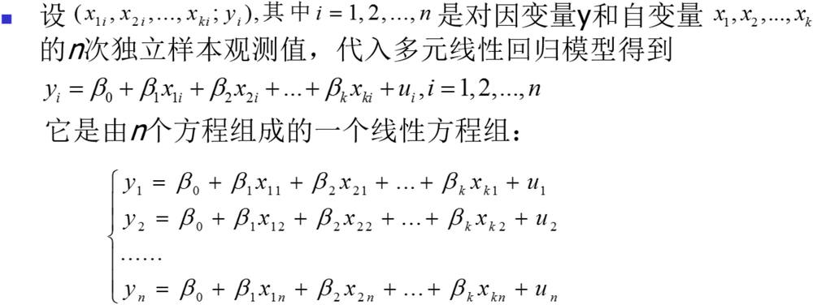
n》k
第 19 页 · 多元线性回归（3）
多元线性回归（3）
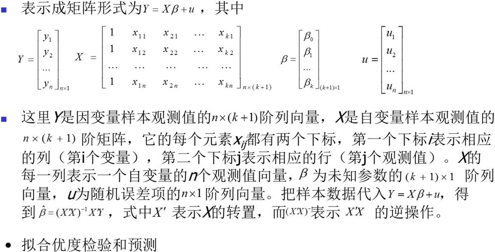
问题： 可逆？自变量之间相互独立
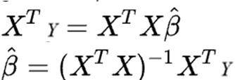
第 20 页 · 多元线性回归案例（1）
多元线性回归案例（1）
下表所示我国1988–1998年的城镇居民人均全年耐用消费品支出、人均全年可支配收入和耐用消费品价格指数的统计资料，试建立城镇居民人均全年耐用消费品支出y关于人均全年可支配收入x1和耐用消费品价格指数x2的回归模型。
| 年 份 | 人均耐用消费品支出y | 人均全年可支配收入x1 | 耐用消费品价格指数x2 |
| 1988 | 137.16 | 1181.4 | 115.96 |
| 1989 | 124.56 | 1375.7 | 133.35 |
| 1990 | 107.91 | 1510.2 | 128.21 |
| 1991 | 102.96 | 1700.6 | 124.85 |
| 1992 | 125.24 | 2026.6 | 122.49 |
| 1993 | 162.45 | 2577.4 | 129.86 |
| 1994 | 217.43 | 3496.2 | 139.52 |
| 1995 | 253.42 | 4283.0 | 140.44 |
| 1996 | 251.07 | 4838.9 | 139.12 |
| 1997 | 285.85 | 5160.3 | 133.35 |
| 1998 | 327.26 | 5425.1 | 126.39 |
第 21 页 · 多元线性回归案例（2）
多元线性回归案例（2）
估计的回归方程
yˆ 158.6251 0.0494 x1 0.9133x2
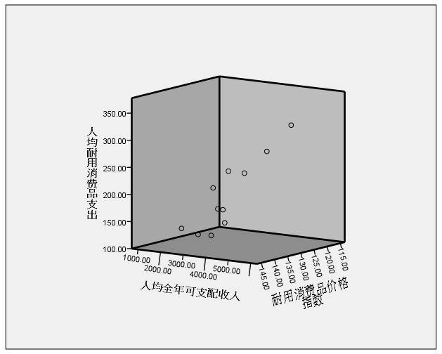
R2 SSR 0.948
SST
R 2 1 SSE /(n k 1) 0.929
SST /(n 1)
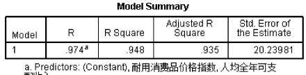
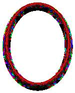
自变量之间相关怎么办？